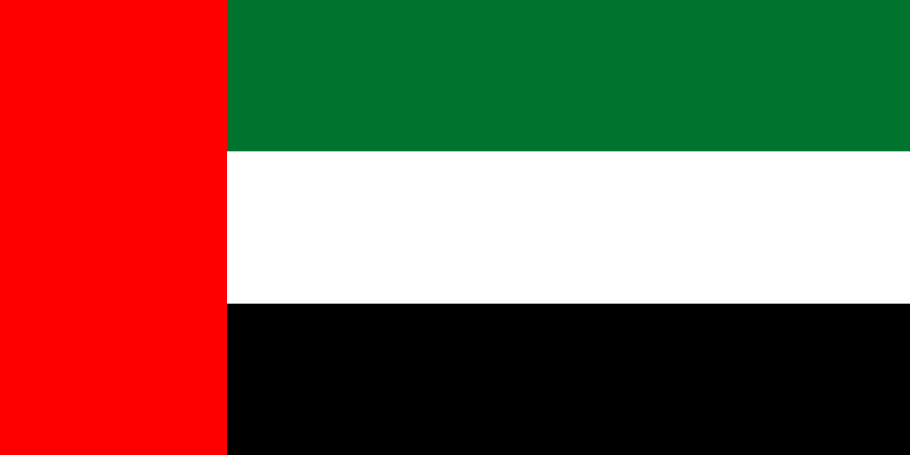
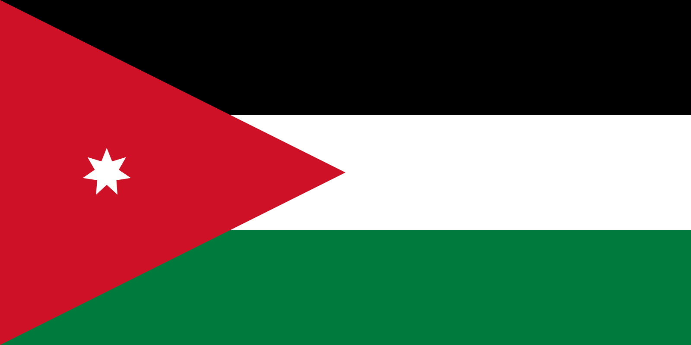
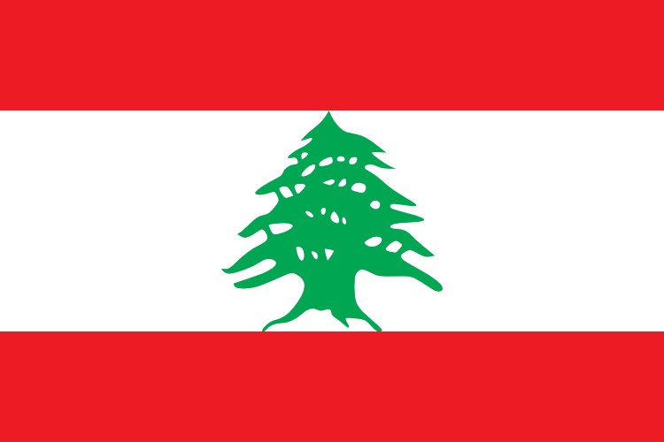
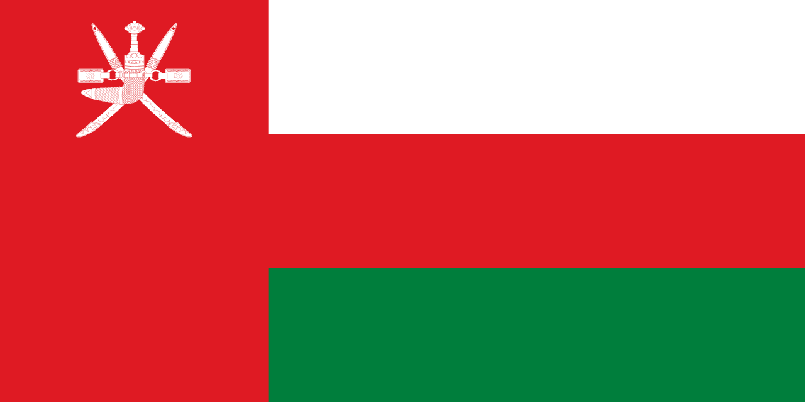
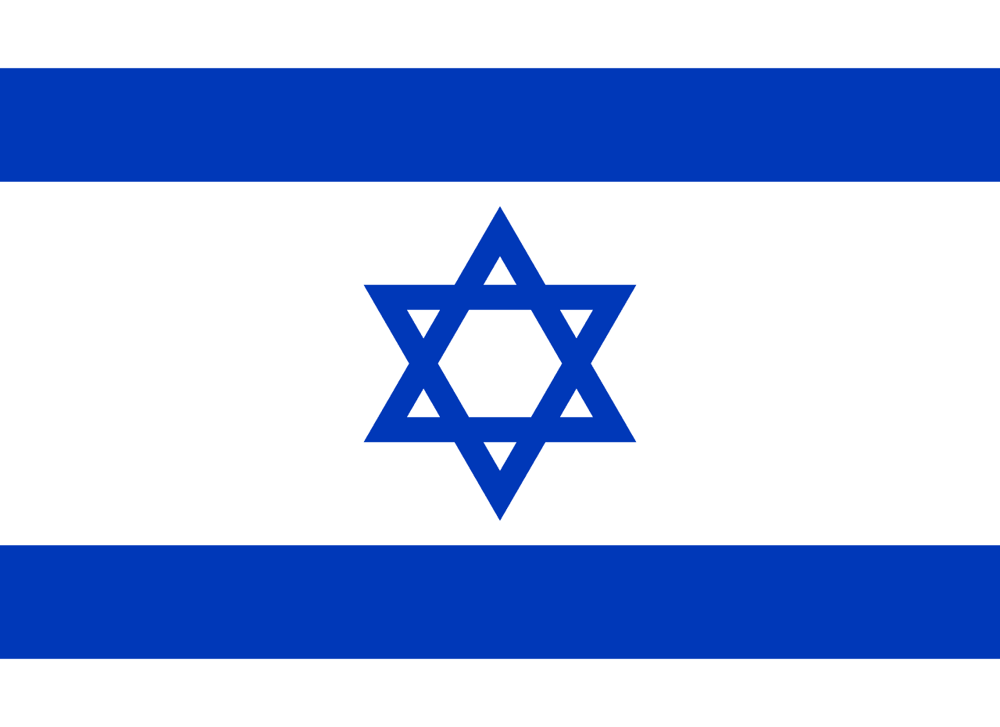

Country Tips

United Arab Emirates
- Landscape: Mostly desert with coastal areas. Modern cities like Dubai and Abu Dhabi
feature
extensive urban development with skyscrapers and artificial islands.
- Street View Coverage: Excellent in major cities and highways. Limited in desert
areas.
- Road Signage:
- Highways: "E" + number (e.g., E11, E311)
- you can also see D and S in front of the number (e.g., D11, S311)
- City roads: Often use "Street", "Road", "Avenue" in both Arabic and English
- Speed limits clearly marked in km/h
- Driving Side: Right.

Qatar
- Landscape: Flat desert peninsula with modern urban development in Doha. Extensive
construction and artificial islands.
- Street View Coverage: Good in Doha and major highways. Limited in desert areas.
- Road Signage:
- Highways: from what i found there is only one highway with number (highway 5)and its marked
with just number
- City roads: Use "Street", "Road", "Avenue" in both Arabic and English
- Speed limits displayed in km/h
- Driving Side: Right.

Jordan
- Landscape: Desert plateau with mountains in the west. Ancient cities like Petra and
modern
Amman.
- Street View Coverage: Good in major cities and tourist areas. Limited in remote
desert
regions.
- Road Signage:
- Highways: just number (e.g., 15, 35)
- City roads: Use "Street", "Road", "Avenue" in both Arabic and English
- Speed limits marked in km/h
- Driving Side: Right.

West Bank
- Landscape: Hilly terrain with urban areas and agricultural land. Mix of modern and
traditional architecture.
- Street View Coverage: Limited to major cities and roads. Many areas not covered.
- Road Signage:
- Roads: Often unnumbered or local names but must from covered roads have number
- City streets: Use "Street", "Road" in Arabic and sometimes English
- Speed limits shown in km/h
- Driving Side: Right.

Lebanon
- Landscape: Mediterranean coast, mountains, and fertile valleys. Modern Beirut with
mix of
traditional and contemporary architecture.
- Street View Coverage: Good in major cities and coastal areas. Limited in
mountainous
regions.
- Road Signage:
- most of the roads are named with names of cities and towns
- City roads: Use "Street", "Road", "Avenue" in both Arabic and French
- Speed limits displayed in km/h
- Driving Side: Right.

Oman
- Landscape: Mountainous interior, coastal plains, and desert. Modern cities like
Muscat
feature traditional and contemporary architecture.
- Street View Coverage: Good in major cities and highways. Limited in remote areas.
- Road Signage:
- Highways: just number (e.g., 1, 6) or you can see something like Muskat-Nizwa Rd (road
betwen muskat and nizwa)
- City roads: Use "Street", "Road", "Avenue" in both Arabic and English
- Speed limits shown in km/h
- Driving Side: Right.

Israel
- Landscape:
Israel has an incredibly diverse landscape despite its small size. The **north** is mountainous and
green (Galilee, Golan Heights), with forests and lush areas. The **coastal plain** from Haifa to Tel
Aviv and Ashkelon is urbanized and Mediterranean. The **central highlands** (Jerusalem, West Bank)
are hilly and rocky. The **Negev Desert** dominates the **south**, especially around Beersheba and
down to Eilat. The **Dead Sea** area is the lowest point on Earth, with a unique desert basin
landscape.
- Street View Coverage:
First launched in 2012. Coverage is generally very good and includes all major cities (Jerusalem,
Tel Aviv, Haifa, Beersheba, Eilat) and most smaller towns and highways. Many kibbutzim and rural
areas are also covered. Coverage can be sparse in some parts of the Negev or near sensitive zones
(e.g., borders with Gaza, Syria, and Lebanon).
- Road Signage:
- Highways:
Numbered with white digits on **red background** (e.g.,
Route 1,
Route 6 - a toll road). These are major intercity roads and freeways.
- Regional roads:
White digits on **blue background** (e.g.,
Route 443, Route 90),
often two-lane roads connecting towns or running through rural areas.
- Local roads:
White digits on **green background**, generally for intra-city or kibbutz-level roads.
- Street names:
Almost always appear in **three languages**: Hebrew, Arabic, and English (Latin script). For
example: "רחוב הרצל / شارع هرتسل / Herzl St".
- Driving side: Right.
- Unique features:
- Road signs can contain **biblical or historical references** (e.g., “Via Dolorosa”, “Mount
Zion”).
- Toll road **Route 6** is common in Google rounds and looks very modern and clean.
- Military zones or settlements may be blurred or restricted in Google imagery.